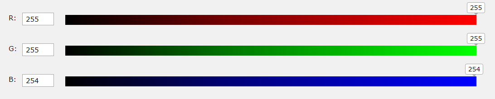

RGB färgvärden stöds utav alla webbläsare idag, och specifieras på detta vis: rgb(red, green, blue) där varje parameter definerar intensiteten av färgen via ett nummer mellan 0
och 255.
Exempel:
rgb(0, 0, 0)
rgb(255, 0, 0)
rgb(185, 90, 0)
rgb(255, 255, 255)
En RGB färgväljare kan se ut på detta vis:
